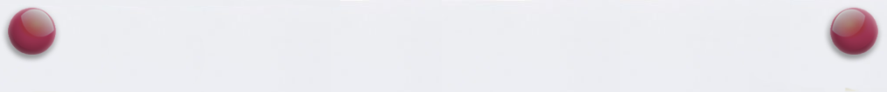

8.1. Тег
1. Основные положения
Ссылки являются основой гипертекстовых документов и позволяют переходить с одной веб-страницы на другую. Особенность их состоит в том, что сама ссылка может вести не только на HTML-файлы, но и на файл любого типа, причем этот файл может размещаться совсем на другом сайте. Главное, чтобы к документу, на который делается ссылка, был доступ. Иными словами, если путь к файлу можно указать в адресной строке браузера, и файл при этом будет открыт, то на него можно сделать ссылку.
HTML-ссылки создаются с помощью элементов <a>,
<area> и <link>. Ссылки представляют собой
связь между двумя ресурсами, одним из которых является текущий документ.
Ссылки можно поделить на две категории:
Cсылки на внешние ресурсы — создаются с помощью тега <link>
и используются для расширения возможностей текущего документа при обработке браузером;
Гиперссылки — ссылки на другие ресурсы, которые пользователь может посетить или загрузить.
2. Структура ссылки
Гиперссылки создаются с помощью парного тега <a></a>.
Внутрь тега помещается текст, который будет отображаться на веб-странице. Текст ссылки
отображается в браузере с подчёркиванием, цвет шрифта — синий, при наведении на ссылку
курсор мыши меняет вид.
Обязательным параметром тега <a> является атрибут href,
который задает URl-адрес веб-страницы.
<a href="http://site.ru">указатель ссылки</a>
Ссылка состоит из двух частей — указателя и адресной части. Указатель ссылки представляет собой фрагмент текста или изображение, видимые для пользователя. Адресная часть ссылки пользователю не видна, она представляет собой адрес ресурса, к которому необходимо перейти.
Адресная часть ссылки состоит из URl. URl (Uniform Resource Locator) — унифицированный адрес ресурса. При создании адресов для разделения слов между собой рекомендуется использовать дефис, а не символ подчёркивания. В общем виде URl имеющий следующий формат:
метод доступа://имя сервера:порт/путь
Метод доступа, или протокол, осуществляет обмен данными между рабочими станциями в
разных сетях. Наиболее распространенные протоколы передачи данных:
file обеспечивает чтение файла с локального диска:
file:/gallery/pictures/summer.html
http предоставляет доступ к веб-странице по протоколу HTTP:
http://site.ru/
https — специальная реализация протокола HTTP, использующая шифрование (как правило, SSL или TLS)
https://site.ru/
ftp осуществляет запрос к FTP-серверу на получение файла:
ftp://pgu/directory/library
mailto запускает сеанс почтовой связи с указанным адресатом и хостом:
mailto: zames@gmail.com
Имя сервера описывает полное имя машины в сети, например, site.ru.
Если имя сервера не указано, то ссылка считается локальной, т.е. она относится к той же
машине, на которой находится HTML-документ, содержащий ссылку.
Номер порта ТСР, на котором функционирует веб-сервер. Представляет собой число, которое
необходимо указывать, если метод требует номер порта (отдельные сервера могут иметь свой отличительный
номер порта). Если порт не указан, по умолчанию используется порт 80. Стандартными портами являются:
21 — FTP
23 — Telnet
70 — Gopher
80 — HTTP
Путь содержит имя папки, в которой находится файл.
3. Абсолютный и относительный путь
Когда в ссылке указывается только имя файла, браузер предполагает, что файл находится в той же папке, что и документ, содержащий гиперссылку. На практике веб-сайты содержат сотни документов, которые размещают в отдельные папки, чтобы ими было легче управлять. Чтобы создать ссылку на файл, находящийся вне папки, содержащей текущий документ, необходимо указать расположение файла или путь. HTML поддерживает два вида пути: абсолютный и относительный.
Ниже приведен пример структуры файлов сайта.
3.1. Абсолютный путь
Абсолютный путь указывает точное местоположение файла в пределах всей
структуры папок на компьютере (сервере). Абсолютный путь к файлу даёт доступ к файлу
со сторонних ресурсов и содержит следующие компоненты:
1) протокол, например, http (опционально);
2) домен (доменное имя или IP-адрес компьютера);
3) папка (имя папки, указывающей путь к файлу);
4) файл (имя файла).
Существует два вида записи абсолютного пути — с указанием протокола и без него:
http://site.ru/pages/tips/tips1.html //site.ru/pages/tips/tips1.html
Если файл находится в корневой папке, то путь к файлу будет следующим:
http://site.ru/index.html
При отсутствии имени файла будет загружаться веб-страница, которая задана по умолчанию в настройках веб-сервера (так называемый индексный файл).
http://site.ru/
Обычно в качестве индексного файла выступает документ с именем index.html. Наличие завершающего слеша
/ означает, что обращение идет к папке, если его нет — напрямую к файлу.
3.2. Относительный путь
Относительный путь описывает путь к указанному документу относительно текущего.
Путь определяется с учётом местоположения веб-страницы, на которой находится ссылка.
Относительные ссылки используются при создании ссылок на другие документы на одном и том же сайте.
Когда браузер не находит в ссылке протокол http://, он выполняет поиск указанного
документа на том же сервере.
Относительный путь содержит следующие компоненты:
1) папка (имя папки, указывающей путь к файлу);
2) файл (имя файла).
Путь для относительных ссылок имеет три специальных обозначения:
/ указывает на корневую директорию и говорит о том, что нужно начать путь
от корневого каталога документов и идти вниз до следующей папки.
./ указывает на текущую папку.
../ подняться на одну папку (директорию) выше.
Главное отличие относительного пути от абсолютного в том, что относительный путь не содержит имени корневой папки и родительских папок, что делает адрес короче, и в случае переезда с одного домена на другой не нужно прописывать новый абсолютный адрес. Но если сторонний ресурс будет ссылаться например, на ваши изображения с относительными адресами, то они не будут отображаться на другом сайте.
4. Якоря
Якоря, или внутренние ссылки, создают переходы на различные разделы текущей веб-страницы,
позволяя быстро перемещаться между разделами. Это оказывается очень удобным в случае, когда на странице
слишком много текста. Внутренние ссылки также создаются при помощи тега <a> с разницей
в том, что атрибут href содержит имя указателя — так называемый якорь, а не URl-адрес.
Перед именем указателя всегда ставится знак #.
Следующая разметка создаст оглавление с быстрыми переходами на соответствующие разделы:
<h1>Времена года</h1> <h2>Оглавление</h2> <a href="#p1">Лето</a> <!--создаём якорь, указав #id элемента--> <a href="#p2">Осень</a> <a href="#p3">Зима</a> <a href="#p4">Весна</a> <p id="p1">...</p> <!--добавляем соответствующий id элементу--> <p id="p2">...</p> <p id="p3">...</p> <p id="p4">...</p>
Если нужно сделать ссылку с одной страницы сайта на определенный раздел другой страницы,
то необходимо задать id для этого раздела страницы, а затем добавить его к абсолютному адресу ссылки:
<th id="about-color">color</th> <a href="https://html5book.ru/css-shrifty/#about-color" class="site" target="_blank">color</a>
5. Изображение - ссылка
Чтобы сделать кликабельное изображение, необходимо поместить элемент <img> внутрь тега <a>.
Чтобы ссылка открывалась в другом окне, нужно добавить атрибут target="_blank" для ссылки.
Например этот код:
<a href="../index.html" target="_blank"><img class="center-img" width="20%" height="20%" src="example/pic/homepage.jpg" alt="Homepage"></a>
Будет отображаться на веб-странице следующим образом:
6. Ссылки на различные ресурсы
У ссылок появились новые возможности — по клику можно не только переходить на другие
страницы и скачивать файлы, но и совершать звонки на телефоны, отправлять сообщения или звонить по скайпу.
Ссылка на телефонный номер:
<a href="tel:+381234567899">+38-123-456-78-99</a>
Ссылка на адрес электронной почты:
<a href="mailto:zymeth@gmail.com">zymeth@gmail.com</a>
Ссылка на скайп (позвонить):
<a href="skype:имя-пользователя?call">Skype</a>
Ссылка на скайп (открыть чат):
<a href="skype:имя-пользователя?chat">Skype</a>
Ссылка на скайп (добавить в список контактов):
<a href="skype:имя-пользователя?add">Skype</a>
Ссылка на скайп (отправить файл):
<a href="skype:имя-пользователя?sendfile">Skype</a>
6.1. Обеспечение доступа к FTP-серверам
Еще одной возможностью Internet является предоставление доступа к FTP-серверу. File Transfer Protocol (FTP) позволяет пользователям копировать на свой компьютер файлы с других компьютеров (FTP-серверов). С помощью этого популярного метода компании и отдельные авторы условно-бесплатных продуктов распространяют демонстрационные версии своих программных продуктов или исправления к ним.
Ссылка на FTP-сервер позволяет пользователю получить определенный файл. Ссылки этого типа удобны для создания обзоров программного обеспечения. Они позволяют читателю самому посмотреть заинтересовавшую его программу. Делают ссылки на FTP-серверы и те авторы, которые хотят распространить информацию в виде файлов.
Ссылки на FTP-серверы создаются так же, как и прочие ссылки, и имеют
такой же вид. Вместо http: следует поставить ftp:, a URL заменить на строку
//имя_сервера/путь. Имя сервера имеет такой же вид, как адресная
часть URL. Следует проследить, чтобы указанное имя сервера относилось к
машине, которая поддерживает анонимные FTP-соединения. Ссылки на
FTP-серверы всегда поддерживаются браузерами.
Типичная ссылка на FTP-сервер выглядит следующим образом:
FAQ можно найти <А HREF="ftp://ftp.mysite.com/pub/FAQ"> здесь</A>
Если имя файла не указано, браузер покажет все файлы указанного каталога. Это необходимо в тех случаях, когда надо предоставить пользователю доступ к нескольким файлам, например к программам для различных платформ или большим файлам, разбитым на несколько частей.
С технической точки зрения большой разницы между FTP и Web нет. Поэтому Web-браузеры поддерживают FTP-ссылки, не нуждаясь при этом в каких-либо дополнительных программах. браузеры отображают список файлов в текущем каталоге и отмечают, что из них является каталогом, а что - собственно файлом. Если щелкнуть на имени каталога, то браузер покажет список файлов данного каталога. Если щелкнуть на имени файла, то браузер загрузит файл.
По умолчанию при активации FТР-ссылки устанавливается
анонимное FTP-соединение. Это означает, что сервер, к которому
пользователь пытается получить доступ, не требует имени
пользователя. Анонимные FTP-серверы отсылают и принимают файлы всех,
кто зашел под именем "anonymous". Паролем обычно служит электронный
адрес пользователя, но и это зачастую необязательно. С помощью
анонимных FTP-серверов компании, распространяющие условно-бесплатные программы,
расширяют круг своих клиентов. Не анонимные FTP-серверы
контролируют получение доступа. Обычно для получения доступа на
такой сервер пользователю необходимо иметь на нем вход.
Постороннему человеку нельзя получить доступ к не анонимному
FTP-серверу. Это используется во многих компаниях, предоставляющих
своему персоналу возможность обращаться к корпоративному
FTP-серверу, используя персональные входы.
Сделать из ссылки на анонимный FTP-сервер ссылку на не анонимный
сервер достаточно просто. Следует разместить перед именем сервера
имя пользователя и символ @. При этом большинство Web-браузеров
автоматически попытаются зайти на сервер, используя указанное имя
пользователя. Затем браузер запрашивает у пользователя пароль
для входа на этот сервер.
7. Атрибуты ссылок
Элемент <a> (как и другие теги) поддерживает глобальные атрибуты и собственные.
| Атрибут | Описание, принимаемое значение |
|---|---|
download |
Дополняет атрибут href и сообщает браузеру, что ресурс должен быть загружен в момент,
когда пользователь щелкает по ссылке, вместо того, чтобы, например, предварительно открыть его (как PDF-файл).
Задавая имя для атрибута, мы таким образом задаем имя загружаемому объекту. Разрешается использовать
атрибут без указания его значения:
|
href |
Значением атрибута является URL-адрес документа, на который указывается ссылка. |
hreflang |
Определяет язык связанного веб-документа. Используется только вместе с атрибутом href.
Принимаемые значения — аббревиатура, состоящая из пары букв, обозначающих код языка, например:
|
media |
Определяет, для каких типов устройств файл будет оптимизирован. Значением может быть любой медиа-запрос. |
ping |
Отслеживает URL-адреса ресурсов, по которым переходил пользователь. |
rel |
Дополняет атрибут href информацией об отношении между текущим и связанным документом. Принимаемые значения:alternate — ссылка на альтернативную версию документа (например, печатную форму страницы, перевод или зеркало).author — ссылка на автора документа.bookmark — постоянный URL-адрес, используемый для закладок.help — ссылка на справку.license — ссылка на информацию об авторских правах на данный веб-документ.next/prev — указывает связь между отдельными URL. Благодаря этой разметке Google может определить, что содержание данных страниц связано в логической последовательности.nofollow — запрещает поисковой системе переходить по ссылкам на данной странице или по конкретной ссылке.noreferrer — указывает, что переходе по ссылке браузер не должен посылать заголовок HTTP-запроса (Referrer), в который записывается информация о том, с какой страницы пришел посетитель сайта.prefetch — указывает, что целевой документ должен быть кэширован, т.е. браузер в фоновом режиме загружает содержимое страницы к себе в кэш.search — указывает, что целевой документ содержит инструмент для поиска.tag — указывает ключевое слово для текущего документа.
|
target |
Указывает на то, в каком окне должен открываться документ, к которому ведет ссылка. Принимает следующие значения:_self — страница загружается в текущее окно;_blank — страница открывается в новом окне браузера;_parent — страница загружается во фрейм-родитель;_top — страница загружается в полное окно браузера. |
type |
Указывает MIME-тип файлов ссылки, т.е. расширение файла. На данный момент носит больше справочную информацию. |
8. Карты ссылок
В HTML возможно сделать изображение, при клике на которое пользователь будет переходить по различным ссылкам, в зависимости от того на какую область изображения он нажал. Такие изображения называются картами ссылок.
Во многих случаях карты ссылок используются вместо гипертекстовых ссылок. Вот несколько примеров использования карт ссылок.
- Представление ссылок, физически связанных друг с другом. Щелчок, например, на карте мира сделать легче, чем выбрать название страны из списка.
- Обеспечение возможности перехода к важнейшим частям страницы в любое время. Можно даже сделать карту ссылок постоянной частью всех страниц Web-сервера, наподобие панели инструментов.
- Для обеспечения дружественного интуитивно понятного интерфейса. При размещении на Web-сервере новых страниц к ним можно добавлять изображения, облегчающие навигацию.
Важнейшими тегами для создания карты ссылок являются <img>,
<map> и <area>.
Адрес изображения может быть указан полностью (абсолютный URL), например:
Тег <map> служит для представления графического изображения в виде
карты с активными областями. Активные области определяются по изменению вида курсора мыши
при наведении. Щелкая мышью на активных областях, пользователь может переходить к связанным документам.
Для начала стоит напомнить значение атрибута usemap тега <img>.
Атрибут usemap определяет изображение в качестве карты-изображения.
Значение обязательно должно начинаться с символа #. Значение ассоциируется со
значением атрибута name или id тега <map> и создает
связь между элементами <img> и <map>. Атрибут нельзя использовать,
если элемент <map> является потомком элемента <a> или <button>.
Синтаксис: usemap="#mymap".
Для тега доступен атрибут name, который задает имя карты. Значение атрибут name для
тега <map> должно соответствовать имени в атрибуте usemap элемента <img>:
<img src="url" usemap="#имя_карты> <map name="имя_карты"> ... </map>
8.1. Тег <area>
Тег <area> описывает только одну активную область в составе карты
изображений на стороне клиента. Элемент не имеет закрывающего тега. Если одна активная
область перекрывает другую, то будет реализована первая ссылка из списка областей.
<map name="имя_карты"> <area атрибуты> </map>
| Атрибут | Краткое описание |
|---|---|
alt |
Задает альтернативный текст для активной области карты. |
coords |
Определяет позицию области на экране. Координаты задаются в единицах длины и разделяются запятыми: для круга — координаты центра и радиус круга; для прямоугольника — координаты верхнего левого и правого нижнего углов; для многоугольника — координаты вершин многоугольника в нужном порядке, также рекомендуется указывать последние координаты, равные первым, для логического завершения фигуры. |
download |
Дополняет атрибут href и сообщает браузеру, что ресурс должен быть загружен в момент, когда пользователь щелкает по ссылке, вместо того, чтобы, например, предварительно открыть его (как PDF-файл). Задавая имя для атрибута, мы таким образом задаем имя загружаемому объекту. Разрешается использовать атрибут без указания его значения. |
href |
Указывает URL-адрес для ссылки. Может быть указан абсолютный или относительный адрес ссылки. |
hreflang |
Определяет язык связанного веб-документа. Используется только вместе с атрибутом href. Принимаемые значения — аббревиатура, состоящая из пары букв, обозначающих код языка. |
media |
Определяет, для каких типов устройств файл будет оптимизирован. Значением может быть любой медиа-запрос. |
rel |
Дополняет атрибут href информацией об отношении между текущим и связанным документом. Принимаемые значения:alternate — ссылка на альтернативную версию документа (например, печатную форму страницы, перевод или зеркало).author — ссылка на автора документа.bookmark — постоянный URL-адрес, используемый для закладок.help — ссылка на справку.license — ссылка на информацию об авторских правах на данный веб-документ.next/prev — указывает связь между отдельными URL. Благодаря этой разметке Google может определить, что содержание данных страниц связано в логической последовательности.nofollow — запрещает поисковой системе переходить по ссылкам на данной странице или по конкретной ссылке.noreferrer — указывает, что переходе по ссылке браузер не должен посылать заголовок HTTP-запроса (Referrer), в который записывается информация о том, с какой страницы пришел посетитель сайта.prefetch — указывает, что целевой документ должен быть кэширован, т.е. браузер в фоновом режиме загружает содержимое страницы к себе в кэш.search — указывает, что целевой документ содержит инструмент для поиска.tag — указывает ключевое слово для текущего документа.
|
shape |
Задает форму активной области на карте и ее координаты. Может принимать следующие значения:rect — активная область прямоугольной формы;circle — активная область в форме круга;poly — активная область в форме многоугольника;default — активная область занимает всю площадь изображения. |
target |
Указывает, куда будет загружен документ при переходе по ссылке. Принимает следующие значения:_self — страница загружается в текущее окно;_blank — страница открывается в новом окне браузера;_parent — страница загружается во фрейм-родитель;_top — страница загружается в полное окно браузера. |
type |
Указывает MIME-тип файлов ссылки, т.е. расширение файла. |
8.2. Типы областей карт ссылок
Каждая запись файла определения карты ссылок содержит тип области и координаты, по которым можно точно узнать ее расположение. Координаты области отсчитываются от верхнего левого угла изображения; единицами измерения служат пиксели.
Прямоугольная область
Для размещения в карте прямоугольной области ссылки
следует использовать запись типа rect. Для определения прямоугольника
нужны координаты его левого верхнего и правого нижнего углов.
При щелчке мыши в любом месте внутри прямоугольника область
активизируется. Ниже приведен пример прямоугольной области:
<area shape=rectangle coords="0,203,153,235" href="..\index.html" title="Главная страница">
Если точка, на которой сделан щелчок, принадлежит нескольким перекрывающимся областям, переход выполняется к URL той области, которая упоминается первой в файле определений.
Многоугольная область
Для определения геометрической фигуры с произвольным числом
сторон используется тип poly. В этом элементе может быть указано до 100
координат, указывающих вершины многоугольника. Активной областью
считается область внутри многоугольника. Ниже приведен пример
многоугольника:
<area shape="poly" coords="113,24,211,24,233,0,137,0" href="inform.html" alt="Информация">
Круглая область
Для того чтобы создать активную область в виде круга, следует
использовать тип circle. Для окружности задаются три числа — координаты центра круга и радиус:
<area shape="circle" coords="230,340, 100" href="circle.html">
Область по умолчанию
Если пользователь щелкает на карте ссылок, но не попадает ни в
какую область, то используется тип области default. Для этого элемента
координаты не требуются. Например:
<area shape="default" href="index.html">
ПРАКТИКА
Цель работы: Практическое освоение средств HTML, используемых на Web-страницах для создания гипертекстовых ссылок.
Задание к лабораторной работе №3:
- В своей папке по пути:
Группа / Фамилия.Имя /создать новый HTML - документ.
- Добавьте в этот документ заголовок.
- Добавить в документ:
- Несколько заголовков (не менее 2) разного типа;
- Ссылки на эти заголовки в этом же документе;
- 2 ссылки на 2 предыдущие лабораторные работы;
- Добавьте в предыдущую (вторую) лабораторную работу якорь в конце документа;
- Сделайте ссылку на него из документа, который создали в этой лабораторной работе;
- Сделайте изображение с картами ссылок с различными типами областей ведущими на ранее созданные документы;
- Включите в HTML-документ изображения, используйте их в качестве ссылок;
- Сделайте так, чтоб некоторые ссылки открывались в новой вкладке, остальные в текущей;
- Создайте ссылку на электронную почту;
- Добавьте картинку, при клике на которую будет открываться стартовая страница Google в новой вкладке.
Необходимые ресурсы можно найти в папке labs_web_design/sources/!for_students.
Отчет по лабораторной работе должен содержать:
В электронном варианте представить все HTML-документы созданные в работе. Проилюстрировать преподавателю функционирование этих HTML-документов по всем пунктам задания лабораторной работы, рассказать какие теги были использованы и для чего.